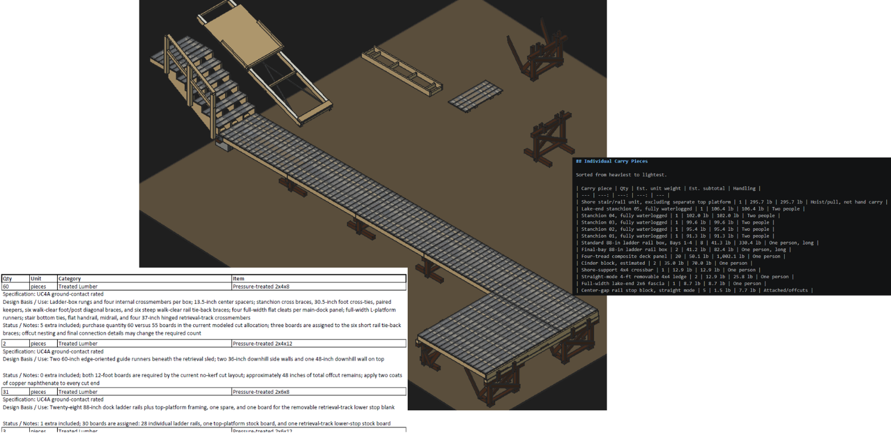

You Can’t Spell AI Without “I”
Like many of us, I have been watching AI capabilities accelerate since the pandemic. We all remember the first poem we got from ChatGPT. Who among us hasn’t made fun images of cats using flamethrowers? I’ve enjoyed the responses to whether we should drive or walk to the car wash or how many r’s in strawberry. And I won my 2 most recent March Madness and World Cup pick-‘em challenges by asking ChatGPT to 100% pick my teams based on game theory and the scoring system.
For quite some time, my office cubemate Chase had been encouraging me to try using Claude, Codex, and other agentic tools. One weekend in January, I finally broke down and did it. I paid $20/month each to get a Claude Pro and ChatGPT accounts and began my first toy problems to see what it could do. I was blown away. It could scrape data… aircraft engine specs, fantasy football trends, home prices. It could build controls models, exercise them, pose algorithm strategies, run trades, recommend best solutions, and even give itself design reviews and action items.
The next several weekends, I was glued to my personal laptop attempting toy problem after toy problem. I was getting depressed… what value did I as a human still provide if this thing could just do it all?
More recently, the pendulum has swung back towards center for me. Part of it is the reality of market forces. The algorithms are inefficient and constrained from being deployed at scale because of power, chips, and water. My former colleagues at GE Vernova are enjoying years and years of order backlogs and skyrocketing stock price. Anthropic and OpenAI are scrambling to secure compute so they don’t have to dumb down their models to scale for the growing user base. I see SpaceX promising to shoot compute into space where solar energy is orders of magnitude more efficient.
But I’ve also realized that the aircraft engines space I work in is a safety-critical industry that is built on “I". That's real intelligence: the lessons we’ve learned turning theory into machines that move people around the earth with astounding safety and reliability. I come to work every day and marvel at the “I” that surrounds me. [Reminder to protect your firm’s knowledge at all costs by being compliant with AI tool use].
I’m still using AI for lots of things. Most recently, I took a vacation to build a complex lake dock for my family’s camp in Maine. The intelligence behind the design was 90% mine, prompted into existence and entirely rendered by ChatGPT/Codex. I uploaded a few rough sketches and for a couple weekends, I had Codex write me about 30 iterations of FreeCAD macros (3,000 lines of python). I reviewed each rendering and came up with ideas to make it modular because composite decking is heavy and we will put it in and take it out every year. Sure, I let Codex check the rail spacing, do beam bending checks, check against Maine building code, compute the module weights, build my Home Depot shopping list and estimate the cost. I know how to do all those things, but Codex can do it so much faster—and I know when they’re right and how to sniff out faulty assumptions. The power of the agentic tool set is that when AI hallucinates a problem, I see it, correct it, and then have the AI update all software artifacts including the markdown file so it remembers going forward. Recursive improvement with software artifacts as the state variables.

But the intelligence has largely been mine. And the sore back, bruises, and bloody knuckles are entirely mine!
I strongly recommend self-exploration of AI tools in your personal life. Spend $20/month on the “good stuff”. Learn by doing problems out where you don’t have your firm's crown jewels to protect. See what it can do, so you can come back to work with the savvy to know how it can help make you more productive.
I can’t predict the future. But I know where the “I” in AI has come from so far. And I believe there’s a lot more where that came from.
Disclaimer: I wrote every word in this article… the old-fashioned way 😊